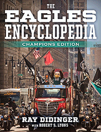

<body bgcolor="#FFFFFF" text="#000000" link="#0000FF" vlink="#CC0000" alink="#CC0000"><center><hr width="350" size="1" align="center" noshade>An updated edition of the best-selling book The Eagles Encyclopedia celebrating the Super Bowl Champions, the E-A-G-L-E-S!<hr width="350" size="1" align="center" noshade><p><a href="https://cdcshoppingcart.uchicago.edu/Cart/ChicagoBook.aspx?ISBN=&&PRESS=temple" target="_top">Buy this book!</a> | <a href="https://cdcshoppingcart.uchicago.edu/Cart/Cart.aspx?PRESS=temple" target="_top">View Cart</a> | <a href="https://cdcshoppingcart.uchicago.edu/Cart/Cart.aspx?PRESS=temple" target="_top">Check Out</a></p><p></p></center><!--none//--><h1 class = "booktitle">The Eagles Encyclopedia</h1> <h1 class = "subtitle">Champions Edition</h1>
<h3>Ray Didinger with Robert S. Lyons </h3>
<p class="info">cloth: $40.00, Oct 18<BR>EAN:&nbsp;978-1-4399-1848-7<BR><font color=#990033>Not Yet Published Preorder</FONT><font size=-7><br>&nbsp;</font></p><p class="info"></p></td></tr></table>
<BR> <p class="info">496 pp<BR> 8.3125 x 10.875<BR> 28 color photos, 367 halftones <p class="info"><font size=-7>&nbsp;</font></p><p class="info">
</P><BLOCKQUOTE></BLOCKQUOTE>
<p>Ray Didinger, like every die-hard Eagles fan, has been waiting since the 1960 NFL Title for the Birds to win the Super Bowl. In this "Champions Edition" of <i>The Eagles Encyclopedia, </i>beloved Eagles commentator Didinger celebrates his team and their remarkable, against-all-odds season that ended at Super Bowl LII, where they claimed victory over the Patriots in Minnesota.
<br/><br/>
Didinger updates his best-selling book <i>The Eagles Encyclopedia </i>with the departure of Coach Chip Kelly and the dawn of the Doug Pederson era. He provides a new chapter on the 2017-18 season and postseason. And he includes dozens of new player, coach, and front-office profiles as well as Hall of Fame updates on 2018 inductees Brian Dawkins and Terrell Owens.
<br/><br/>
But wait, there's more!
<br/><br/>
&middot;An all-new 16-page color insert highlights key moments on the road to the Super Bowl
&middot;Iconic photos old and new, from Concrete Charlie Bednarik's tackle of Frank Gifford to Nick Foles and the Philly Special
&middot;More than 100 new photos from the recent season as well as from earlier periods in the Eagles' storied history
<br/><br/>
<i>The</i> <i>Eagles Encyclopedia: Champions Edition </i>is more than a keepsake of a championship season. It is a book about a city and a team and the emotion that binds them.<br>
<P CLASS="top"><A HREF="#top">BACK TO TOP</A></P>&nbsp;
<BR>&nbsp;
&nbsp;<P>
</P><BR>&nbsp;
<H2 class="inpageheading"><A NAME="author bio"></a>About the Author(s)</H2><p><b>Ray Didinger</b> was the first print journalist inducted into the Philadelphia Sports Hall of Fame. As a columnist for the <i>Philadelphia Bulletin</i> and <i>Philadelphia Daily News</i>, he was named Pennsylvania Sportswriter of the Year five times. In 1995, he won the Dick McCann Award for long and distinguished reporting on pro football, and his name was added to the writers' honor roll at the Pro Football Hall of Fame. He also won six Emmy Awards as a writer and producer for NFL Films. He has authored or co-authored eleven books including <i>One Last Read: The Collected Works of the World's Slowest Sportswriter</i> (Temple) and <i>The Ultimate Book of Sports Movies</i>. His play, <i>Tommy and Me</i>, about his friendship with Eagles Hall of Famer Tommy McDonald, was produced by Theatre Exile in Philadelphia and premiered in 2016. He is a football analyst for NBC Sports Philadelphia.<br>
<p><b>Robert S. Lyons</b> (1939-2013) was the author of <i>On Any Given Sunday: A Life of Bert Bell</i> and <i>Palestra Pandemonium: A History of the Big Five</i> (both Temple).<br>
<P CLASS="top"><A HREF="#top">BACK TO TOP</A></P>
<p><h2 class="inpageheading"><a name="subjects"></a>Subject Categories</h2> <p><a href="http://www.temple.edu/tempress/philly.html" target="_top">Philadelphia Region</a> <br><a href="http://www.temple.edu/tempress/sports.html" target="_top">Sports</a> <br><a href="http://www.temple.edu/tempress/general.html" target="_top">General Interest</a> <br><a href="" target="_top"></a> <br><a href="" target="_top"></a> </p>
</p>
<P>
</P>
<p align="center"><a href="https://cdcshoppingcart.uchicago.edu/Cart/ChicagoBook.aspx?ISBN=&&PRESS=temple" target="_top">Buy this book!</a> | <a href="https://cdcshoppingcart.uchicago.edu/Cart/Cart.aspx?PRESS=temple" target="_top">View Cart</a> | <a href="https://cdcshoppingcart.uchicago.edu/Cart/Cart.aspx?PRESS=temple" target="_top">Check Out</a></p><p><font face="Arial" size="1"><a href="copyright.html" onMouseOver="window.status='Web Copyright Policy';return true;" onMouseOut="window.status=''" title="Web Copyright Policy">&copy;</a> 2018 <a href="http://www.temple.edu" target="new" onMouseOver="window.status='Link to Temple University home page';return true;" onMouseOut="window.status=''" title="Link to Temple University home page">Temple University</a>. All Rights Reserved. http://www.temple.edu/tempress/titles/1830B_reg.html</font></p>